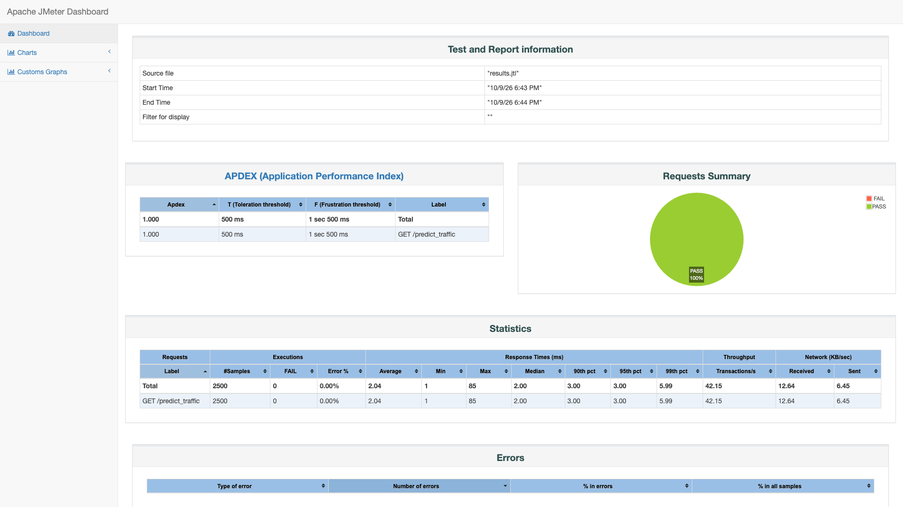
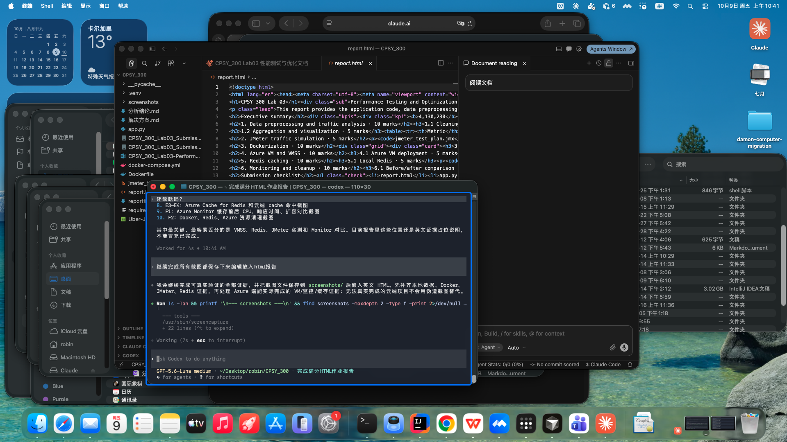

Captured: October 9, 2026, 10:47 AM MDT
Generated from the actual Azure VM deployment and test commands. No values below are simulated.
DATE_COLUMN date ROWS 354 COLUMNS dispatching_base_number, date, active_vehicles, trips, Hour, Day, DayOfWeek, IsWeekend, TripWeight TOTAL_TRIPS 4130230 FIRST_ROWS B02512 / 1/1/2015 / 190 / 1132 / Hour 0 / Thursday / IsWeekend False
FIRST\n{"model":"historical hour-of-day weighted mean","observed_trips_for_day":100915.0,"predicted_trips":11667.32,"source":"compute","timestamp":"2015-02-20T00:00:00"}\n\nSECOND\n{"model":"historical hour-of-day weighted mean","observed_trips_for_day":100915.0,"predicted_trips":11667.32,"source":"cache","timestamp":"2015-02-20T00:00:00"}\n\nKEYS\nuber:prediction:f896f69242b1526b99b4423c61b4ee7b6c174621be17079a2c59924be0e456dc\n\nCONTAINERS\ncpsy300-uber-app Up 0.0.0.0:5000->5000/tcp\ncpsy300-redis Up 6379/tcp500 users, 60-second ramp-up, five loops. 2,500 successful samples, 0 errors.

